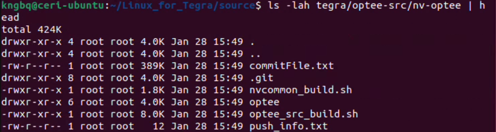
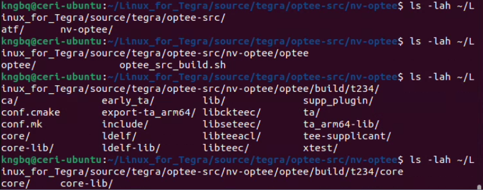
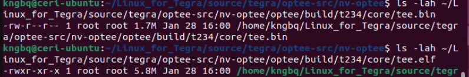
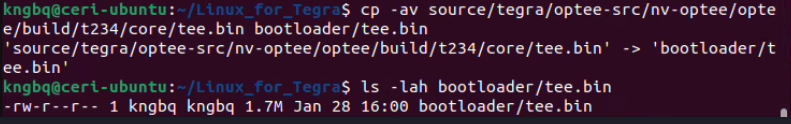
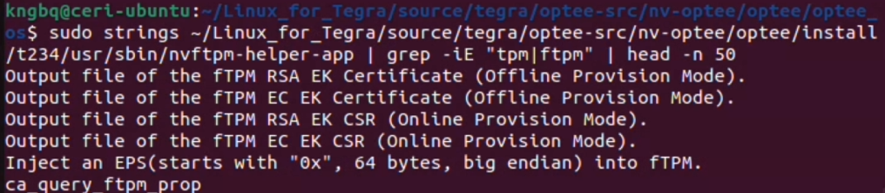
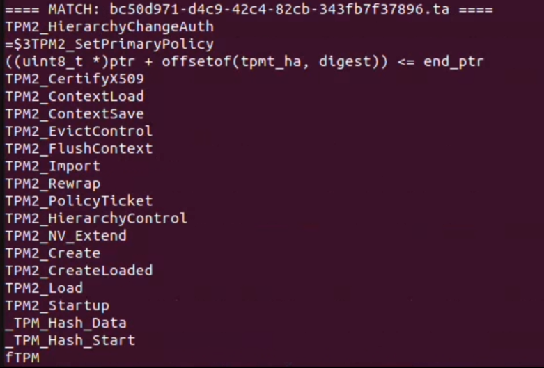
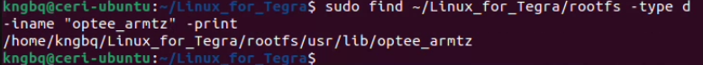
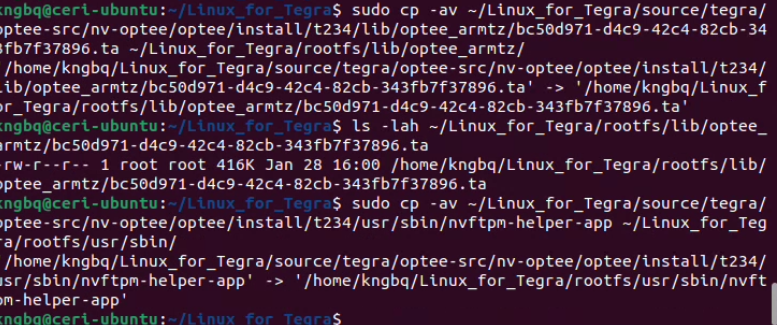

Update the host operating system and install all required build, flashing, and cross-compilation dependencies before continuing.
sudo apt update
sudo apt install -y \
build-essential \
git \
wget \
curl \
python3 \
python3-pip \
libssl-dev \
libncurses5-dev \
bison \
flex \
libelf-dev \
bc \
cpio \
rsync \
device-tree-compiler \
u-boot-tools \
lz4 \
zstd \
usbutils \
gcc-aarch64-linux-gnu \
g++-aarch64-linux-gnu \
pkg-config
sudo apt-get install qemu-user-tools
sudo apt-get install libxml2-utils
Run the following from your Linux host:
# Jetson Linux BSP (driver package + flashing tools)
wget https://developer.nvidia.com/downloads/embedded/l4t/r36_release_v4.3/release/Jetson_Linux_r36.4.3_aarch64.tbz2
# Sample Ubuntu root filesystem
wget https://developer.nvidia.com/downloads/embedded/l4t/r36_release_v4.3/release/Tegra_Linux_Sample-Root-Filesystem_r36.4.3_aarch64.tbz2
You must be logged into your NVIDIA Developer account and have accepted the Jetson Linux license agreement, otherwise these downloads will fail or redirect to an authentication page.
tar xf Jetson_Linux_r36.4.3_aarch64.tbz2
cd Linux_for_Tegra
sudo tar xpf ../Tegra_Linux_Sample-Root-Filesystem_r36.4.3_aarch64.tbz2 -C rootfs
sudo ./apply_binaries.sh
At this stage, the Jetson Linux BSP and Ubuntu root filesystem are fully assembled and ready for source synchronization and OP-TEE integration.
Navigate to the source directory and run source_sync.sh to retrieve NVIDIA-matched kernel, OP-TEE, and platform sources for Jetson Linux r36.4.x.
cd ~/nvidia/Linux_for_Tegra/source
sudo ./source_sync.sh
When prompted for a tag, you must enter jetson_36.4. This ensures the OP-TEE and kernel sources match the Jetson Linux r36.4.3 (or r36.4.x) BSP. Using a different tag may result in build or runtime failures.
Example Prompt:
vboxuser@nvFlasher2:~/nvidia/Linux_for_Tegra/source$ sudo ./source_sync.sh
Downloading default kernel/kernel-jammy-src source...
Cloning into '/home/vboxuser/nvidia/Linux_for_Tegra/source/kernel/kernel-jammy-src'...
remote: Enumerating objects: 8617907, done.
remote: Counting objects: 100% (8617907/8617907), done.
remote: Compressing objects: 100% (1256155/1256155), done.
Receiving objects: 100% (8617907/8617907), 1.88 GiB | 31.61 MiB/s, done.
remote: Total 8617907 (delta 7322146), reused 8605619 (delta 7309884), pack-reused 0 (from 0)
Resolving deltas: 100% (7322146/7322146), done.
Checking objects: 100% (33554432/33554432), done.
The default kernel/kernel-jammy-src source is downloaded in: /home/vboxuser/nvidia/Linux_for_Tegra/source/kernel/kernel-jammy-src
Please enter a tag to sync /home/vboxuser/nvidia/Linux_for_Tegra/source/kernel/kernel-jammy-src source to
(enter nothing to skip): jetson_36.4
Syncing up with tag jetson_36.4...
After sync, confirm OP-TEE shows up:
# Check parent folder
ls -lah tegra/optee-src
# Check for files
ls -lah tegra/optee-src/nv-optee | head
# Check for any files in the sub folders with anything optee related
find . -maxdepth 4 -iname "*optee*" | head -n 50
Example Output:

In the NVIDIA OP-TEE source tree synced via source_sync.sh, the correct build driver is optee_src_build.sh. This script is required for building OP-TEE with NVIDIA-specific integrations.
First, make sure the paths are exported into the userspace:
cd ~/Linux_for_Tegra/source/tegra/optee-src/nv-optee
# Toolchain env (NVIDIA script expects these)
export CROSS_COMPILE_AARCH64_PATH=/usr
export CROSS_COMPILE_AARCH64=/usr/bin/aarch64-linux-gnu-
export PKG_CONFIG=/usr/bin/pkg-config
# STMM binary used by OP-TEE build (you should already have it in your BSP)
export UEFI_STMM_PATH=~/Linux_for_Tegra/bootloader/standalonemm_optee_t234.bin
Now run the OP-TEE build.
The -t flag enables NVIDIA's firmware TPM (fTPM) support within OP-TEE for T234-based platforms. This flag is required to expose TPM 2.0 functionality through OP-TEE at runtime.
For The Jetson Nano Orin, the tag will be (t234).
cd ~/Linux_for_Tegra/source/tegra/optee-src/nv-optee
# Build OP-TEE + fTPM
sudo -E ./optee_src_build.sh -p t234 -t
To confirm that the Optee source was built properly, run these ls commands to confirm the Optee files exist:
# Check for /optee-src
ls -lah ~/Linux_for_Tegra/source/tegra/optee-src/
# Check for /optee
ls -lah ~/Linux_for_Tegra/source/tegra/optee-src/nv-optee/optee
# Check for /t234
ls -lah ~/Linux_for_Tegra/source/tegra/optee-src/nv-optee/optee/build/t234/
# Check for /core
ls -lah ~/Linux_for_Tegra/source/tegra/optee-src/nv-optee/optee/build/t234/core
# Check for tee.bin
ls -lah ~/Linux_for_Tegra/source/tegra/optee-src/nv-optee/optee/build/t234/core/tee.bin
# Check for tee.elf
ls -lah ~/Linux_for_Tegra/source/tegra/optee-src/nv-optee/optee/build/t234/core/tee.elf


After the OP-TEE build completes successfully and the output files are verified, copy the newly built tee.bin into the BSP bootloader directory so it is included during flashing.
cd ~/nvidia/Linux_for_Tegra
# (optional) backup existing tee.bin if present
cp -av bootloader/tee.bin bootloader/tee.bin.bak 2>/dev/null || true
# copy newly built tee.bin into bootloader/
cp -av source/tegra/optee-src/nv-optee/optee/build/t234/core/tee.bin bootloader/tee.bin
# verify
ls -lah bootloader/tee.bin

This step verifies that fTPM support was correctly enabled during the OP-TEE build and that the expected configuration and artifacts were generated.
Run this grep command:
sudo grep -RIn "CFG_FTPM\|ftpm\|tpm" \
~/nvidia/Linux_for_Tegra/source/tegra/optee-src/nv-optee/optee/build/t234/conf.mk \
~/nvidia/Linux_for_Tegra/source/tegra/optee-src/nv-optee/optee/optee_os/mk/config.mk \
2>/dev/null | head -n 120
And check if an fTPM TA shows up in install output:
find ~/Linux_for_Tegra/source/tegra/optee-src/nv-optee/optee/install/t234 \
-type f \( -iname "*tpm*" -o -iname "*ftpm*" -o -iname " *. ta" \) | head -n 50
See if any tpm or ftpm related files are displayed after this command is used.
Confirm that the tee.elf and tee.bin exist:
ls -lah ~/Linux_for_Tegra/source/tegra/optee-src/nv-optee/optee/build/t234/core/tee.bin
ls -lah ~/Linux_for_Tegra/source/tegra/optee-src/nv-optee/optee/build/t234/core/tee.elf
Copy the tee.elf file into the BSP bootloader directory. This ELF image is required by the boot chain for OP-TEE initialization and debugging support.
cp -av ~/Linux_for_Tegra/source/tegra/optee-src/nv-optee/optee/build/t234/core/tee.elf bootloader/tee.elf
Confirm that the fTPM TrustZone Application (TA) and supporting binaries were generated as part of the OP-TEE build and install process.
Run the strings and grep command to confirm the Output files of the fTMP.
strings ~/nvidia/Linux_for_Tegra/source/tegra/optee-src/nv-optee/optee/install/t234/usr/sbin/nvftpm-helper-app | \
grep -iE "tpm|ftpm" | head -n 50
Example Output:

Run this grep as well to further confirm the fTPM files exist:
grep -RIn "ftpm\|tpm" \
~/nvidia/Linux_for_Tegra/source/tegra/optee-src/nv-optee/optee/optee_os 2>/dev/null | head -n 120
An output should return with various file names related to TPM and fTPM.
Run the following script to identify the fTPM TrustZone Application (TA) by scanning for TPM-related symbols inside installed TA binaries.
for f in ~/nvidia/Linux_for_Tegra/source/tegra/optee-src/nv-optee/optee/install/t234/lib/optee_armtz/*.ta; do
if strings "$f" 2>/dev/null | grep -qiE 'ftpm|tpm2|tpm'; then
echo "==== MATCH: $(basename "$f") ===="
strings "$f" | grep -iE 'ftpm|tpm2|tpm' | head -n 40
echo
fi
done
Example Output:

Example Output: MATCH: bc50d971-d4c9-42c4-82cb-343fb7f37896.ta
Confirm the Trust Application Files exist in /optee_armtz.
ls -lah ~/nvidia/Linux_for_Tegra/source/tegra/optee-src/nv-optee/optee/install/t234/lib/optee_armtz/*.ta | sort -k5 -h | tail -n 30
or, use the file name to find if that file exists in the folder.
ls -lah ~/nvidia/Linux_for_Tegra/source/tegra/optee-src/nv-optee/optee/install/t234/lib/optee_armtz/bc50d971-d4c9-42c4-82cb-343fb7f37896.ta
sudo find ~/nvidia/Linux_for_Tegra/rootfs -type d -iname "optee_armtz" -print

Copy the fTPM TrustZone Application (TA) into the target root filesystem so it will be available to OP-TEE at runtime.
sudo cp -av ~/Linux_for_Tegra/source/tegra/optee-src/nv-optee/optee/install/t234/lib/optee_armtz/bc50d971-d4c9-42c4-82cb-343fb7f37896.ta ~/Linux_for_Tegra/rootfs/lib/optee_armtz/
Verify:
ls -lah ~/Linux_for_Tegra/rootfs/lib/optee_armtz/bc50d971-d4c9-42c4-82cb-343fb7f37896.ta
Copy the nvftpm-helper-app into the target root filesystem. This userspace helper is required to interface with the fTPM service once the system boots.
sudo cp -av ~/Linux_for_Tegra/source/tegra/optee-src/nv-optee/optee/install/t234/usr/sbin/nvftpm-helper-app ~/Linux_for_Tegra/rootfs/usr/sbin/
